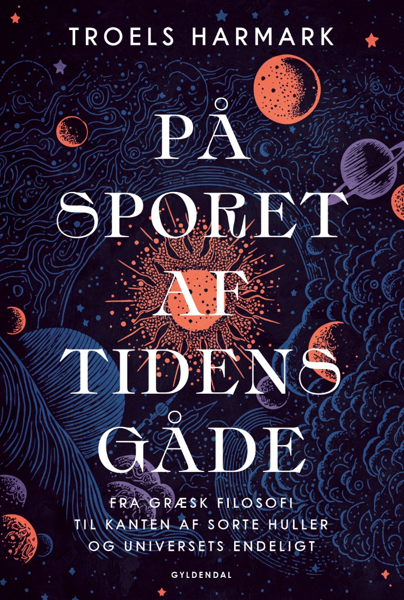

En bog om den måske største gåde af alle
På sporet af
tidens gåde
Fra græsk filosofi til kanten af sorte huller og universets endeligt.
Gyldendal · 2025 · 184 sider

Videnskabsjournalist og forfatter Gunver Lystbæk Vestergård om bogen
»Jeg har altid været draget mod fundamentale spørgsmål som ’hvad er energi?’, ’hvad er rum?’, ’hvad er tid?’. Harmark giver svar på det sidste. Og jeg mener det. Jeg tror vitterligt, at jeg nu forstår bare en lillebitte smule bedre, hvad tid er og ikke er. For eksempel at universet ikke kører efter et kæmpe urværk inde i midten. Harmark har ét ben i filosofien og et i fysikken, og det mærker man hele bogen igennem. Den er tydeligvis skrevet af en mand med et humanistisk hjerte og en naturvidenskabelig hjerne. Der er også en lethed over den måde, han skriver om svimlende fysikstof på. Som om han forstår det på et dybere niveau end de fleste eksperter. Han kobler smukt tid til termodynamik og tyngdekraft, og sådan lidt en passant får han flettet ind, at nåh ja, tiden vil gå i stå om trillioner af år. Det skriver han sørme, at vi skal være glade for.«
»Bogen anbefales varmt til fysiknørder og filosofiske spekulanter i alle aldre.«
»Troels Harmark skriver godt og flydende.«
Bibliotekernes vurdering
Hvordan opleves tiden - og hvad er dens natur? Tidens mysterium går fra et kig på armbåndsuret til at se ud mod universets yderste grænser, hvor det tænkende menneske konfronteres med fysikkens og filosofiens største mysterier. For læsere med almen interesse for kosmologi, filosofi og teoretisk fysik.
Bogens udgangspunkt er at undersøge begrebet tid. Fra antikkens kosmologiske verdensbillede og de klassiske naturlove til moderne teorier om bl.a. superstrenge forklarer Troels Harmark tidens, universets og dermed eksistensens natur. Tidens gåde vedrører stort set alt i opfattelsen af livet, og bogen diskuterer bl.a. spørgsmålet om sandsynligheder, determinisme kontra tilfældet, den fri vilje, mennesket i et univers fuld af mørk energi samt tidens endeligt.
Svimlende bog om ikke bare tiden, men om at være et tænkende individ placeret i et univers fuld af gåder, der udfordrer fysikkens love og menneskets bevidsthed. Harmark skriver i et lettilgængeligt sprog om de mange teorier, der søger at besvare tidens og universets store spørgsmål og kommer også ind på de mere spekulative teorier som fx Boltzmann-hjerner. En stærkt inspirerende bog, der får læseren til at reflektere over tiden og livet i både det kendte og ukendte univers.
Om bogen
Tiden er en gåde
For at løse den tager teoretisk fysiker Troels Harmark os med på en rejse, der rækker fra antikkens naturfilosoffer og frem til nutidens forskningsfront med relativitetsteori, kvantefysik, sorte huller og opdagelsen af tidens oprindelse med universet for 13,8 milliarder år siden.
Det handler om tidens relativitet, at tiden går hurtigere på toppen af et højhus end ved jorden, og at tiden kan påvirkes så meget, at den går i stå på kanten af et sort hul. Det handler om verdens foranderlighed, tidens retning, livets opståen, tidens forbindelse til tilfældet, om der er et eller flere universer, og hvorfor vores univers ser ud, som det gør.
På sporet af tidens gåde beskæftiger sig med nogle af de største og mest grundlæggende spørgsmål, man kan stille. Hvad er tid, og hvad vil det sige, at tiden går? Er tiden den samme for alle? Er alting forudbestemt, eller kan verden overraske? Hvordan opstod tiden, og vil den en dag holde op med at gå?
Køb bogen
Kom på sporet af tidens gåde
ISBN 9788702407495 · Se aktuelle priser, leveringsvilkår og eventuelle medlemspriser hos den enkelte boghandel.
Foredrag
Hør om tidens gåde
- 8. februar 2027 · CBS i København · Folkeuniversitetet i Emdrup · Læs mere
- 24. november 2026 · Sundby Bibliotek · Vild med videnskab · Læs mere
- 23. og 30. november 2026 · DTU i Kgs. Lyngby · Københavns Folkeuniversitet · Læs mere
- 2. november 2026 · Aarhus · Folkeuniversitetet i Aarhus · Læs mere
- 19. og 26. oktober 2026 · CBS i København · Københavns Folkeuniversitet · Læs mere
- 5. oktober 2026 · Frederikssund · Folkeuniversitetet i Frederikssund · Læs mere
- 17. september 2026 · Aalborg · Folkeuniversitet i Aalborg · Læs mere
- 23. marts 2026 · Emdrup · Folkeuniversitetet i Emdrup · Læs mere
- 10. og 17. november 2025 · Søndre Campus · Københavns Folkeuniversitet
- 5. oktober 2025 · Ørestad Gymnasium · Ørestad Sound and Science Festival
- 16. juni 2025 · Vangsgaards Antikvariat
- 3. juni 2025 · Aalborg · Folkeuniversitet i Aalborg
- 1. februar 2025 · Odense · Word Festival